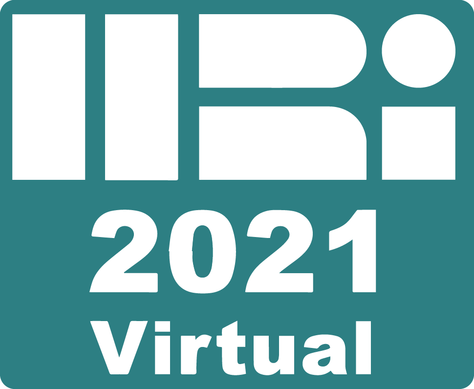
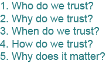
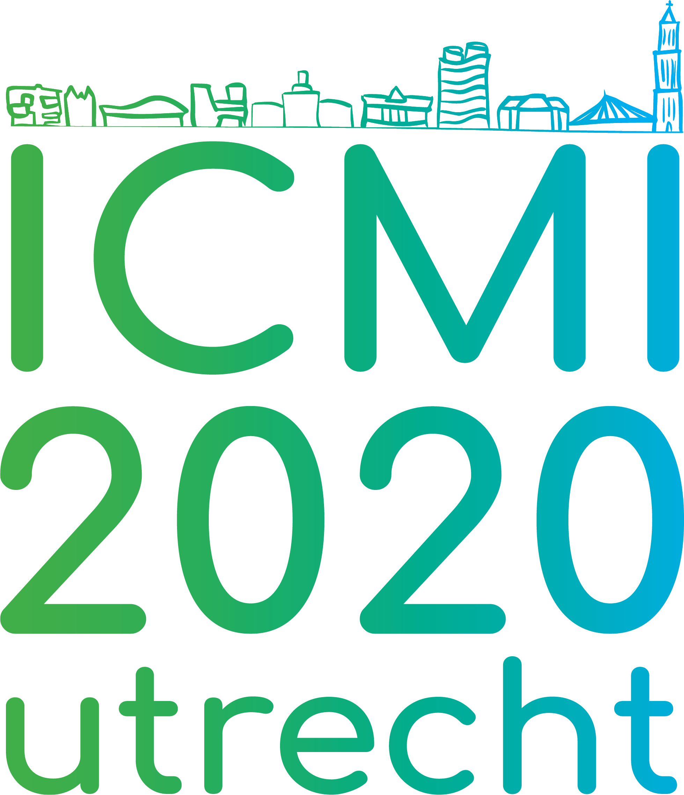
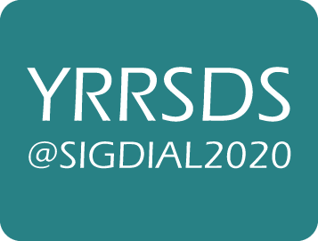
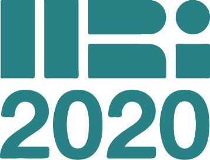

This part of my website is dedicated to a blog that I will try to keep updated. I will write about my research developments, events that I participate in, and other stuff I deem interesting enough to share with you.

I didn't sit still during the HRI2021 conference last week, and it paid off. HRI is for me the conference of the year to attend.
Not only because it gives me warm feelings since I published my first paper there last year, but also because it is my community: it's all about how people and robots should interact with each other.
Furhermore, this year I was the co-organiser of a workshop on measuring child-robot relationship formations, I had two papers accepted to the TRAITS workshop and the Sound in HRI workshop, and we had a
student who presented her bachelor(!) thesis as a full paper at the general conference. I decided to completely mess up my sleep schedule, and participated to the full conference, meaning I was working from 4pm to 3am.
Although I found out you can get jetlagged without boarding a plane, it was completely worth it. Let me tell you why.
The first day of the conference was workshop day I. For me, this was the most stressful day, because I was organising one myself, together with my co-organisers
Rebecca Stower, Mike Ligthart, Caroline van Straten, Natalia Calvo-Barajas and Thomas Beelen.
However, I'm pleased to say that our workshop on Interdisciplinary Research Methods for Child-Robot Relationship Formation had more participants than we could have imagined (35 at its lowest, 51 at its highest!), and led to many fruitful discussions, moderated
by Prof. Mark Neerincx, Prof. Koen Hindriks, and Dr. Patrícia Alves-Oliveira. Furthermore, a talk by Dr. Iolanda Leite gave some interesting insights. You can read the proceedings on our website. We will also post updates on how we will manage the output there.
Everyone wants (and needs!) to talk about trust
The general conference had devided the accepted papers into 8 sessions, with general topics. The session I was most interested in was the one about Trust and Ethics (not surprising if you have read what I do).
The papers that piqued my interest the most, were one about how to use trust in a scenario with human-robot collaboration (link) by Sarita Herse, Jonathan Vitale, Benjamin Johnston and Mary-Anne Williams,
and one about how reliable our current trust measures (surveys) are (link) by Meia Chita-Tegmark, Theresa Law, Nicholas Rabb and Matthias Scheutz.
During these presentations, the chat started to blow up with a discussion about how we should measure trust. This created a demand to discuss these issues more in a dedicated discussion room, and shortly one was created by the wonderful organizers, so that we could chat via video call during every break of the conference.
This resulted in many discussions on what trust actually is (is it an attitude, an action, a commitment...?), what trust depends on (context, person, time...), what its moderators are (risks, workload, perceived benefits... see also this great paper that tries to model real-time trust),
and of course how we could measure this (deviating from the traditional but subjective questionnaires (e.g., the trust perception scale or the more recent MDMT survey) and trust games, moving towards the physiological and (para)linguistic cues).
We noticed that even these discussions weren't enough to still our hunger, so this culminated in the birth of a Slack workspace about Trust in HRI! And psst... we might also organize a workshop and more...
The last day of HRI arrived: workshop day II! I went to the TRAITS workshop and the Sound in HRI workshop. At TRAITS I presented my paper on how we could measure trust with speech cues (link). We also had talks by Dr. Pericle Salvini, Prof. Kerstin Dautenhahn, and Prof. Tony Prescott.
I would like to tell you about my take-aways, especially from the last two talks. Prof. Dautenhahn raised five interesting questions about the things we need to consider when researching trust. Especially the last question, why would it matter to measure trust in an interaction, really resonated with me. Although every interaction might involve some level of trust, it might not always be necessary to know the details of this. I will be sure to keep this question in mind in my research.
The other talk, by Prof. Tony Prescott, was about how we actually deceive the users of social robots, both in research and in real-life. Some people might argue that this does not need to be a problem, following the arguments of Shim & Arkin (link), others say it is, and therefore we should avoid deception (e.g., Turkle, 2017), or design it out (e.g., Wortham & Theodorou, 2017).
However, when we think about the Media Equation (link), people even anthropomorphize daily-life objects, and therefore deception (in this case, giving the robot a soul) could not always be designed out. However, we could try to design robots in such a way that their behaviour and capabilities match the expectations and norms of the user (also called contextual integrity). If you'd like to read
more about the different types of deception that occur in social robots, I advise you to read this paper by John Danaher.
At Sound in HRI I presented a paper about a framework dr. Truong and I designed on when the robot should use speech or sounds, based on the communication theory by Shannon & Weaver (1963) and the speech act theory, proposed by Austin in 1975 (link).
You can also watch this three minute video below, where I explain the framework by presenting two example scenarios.
Sound in HRI @HRI2021 presentation
Although I still got some interesting input for my research during these workshops, I would have liked more in-depth discussions, instead of presentations with short Q&A's. I think this is especially valuable when workshops are held online, because you don't have much room for discussions outside of the Zoom meeting (whereas in real-life, you could easily have such a discussion at the coffee machine or during lunch).
Best virtual conference ever!
All in all, I'm super happy about attending this conference. I met new people, I talked a ton about my research and I gained new insights that I can use. And all that, while having fun (and yes, tired).
Therefore, I'd like to conclude with thanking the organization of HRI2021. I know from experience (read my blog post about ICMI2020 below) that organizing a virtual conference brings a lot of new challenges.
So the organizers can be really proud of their accomplishment! However, I still hope that next year I can attend HRI2022 in real-life (in Sapporo, Japan!!).
ICMI2020: A Virtual Organisation Monday 09-11-2020

I did not expect to be in the organisation of an international conference in the first year of my PhD, at least not with a prominent role. But here I was. Besides being Design Chair, and thus responsible for the looks of ICMI2020 (like the logo on the left here),
I was asked at the beginning of July if I could also be Virtual Chair. The virtual chairmanship is a very new part of the organisation, and has been set up due to COVID-19. Being a Virtual Chair means that you are responsible for
choosing the online platforms, managing these, thinking about formats to facilitate as much of the same types of interactions and perhaps expand on it and communicating that with the rest of the organisation. Of course, I didn't have to do this alone.
Michel Jansen was my co-chair, and together we made sure the whole world could attend ICMI2020.
In this blogpost, I would like to tell you a bit more about the challenges and solutions we came across.
Originally, ICMI2020 would be in Utrecht (NL), in the Nicolai church.
Due to the pandemic we couldn't host this in a real-life setting. This is where Michel and I found our first task: what platform(s) should we use to host ICMI2020?
Our criteria were that the platforms should be user-friendly, available in every country, and browser-friendly. After testing many different platforms, we chose Zoom to host the live sessions (since everyone knew by now how to use it),
and Ryver for the offline communication (a combination of Slack and Trello). To also facilitate some networking, we also tried Spatial.chat. We created manuals and how-to videos for all platforms, and even hosted some tutorial sessions
for the organizers, keynote speakers and sponsors.
Although we really tried to keep it as user-friendly, we still saw that it got a bit complicated for some people, since people needed to switch between Ryver, Zoom and Spatial.chat. So our advice is to use one platform on the front-end, so that participants don't need to switch.
One example of such a front-end solution is Hopin, which many conferences now started to use.
When: the timezones
Another challenge was that people were attending the conference from home. This meant that we were dealing with all the major timezones in the world, and we couldn't expect people to change their schedule to the middle of the night.
Our solution was to take the Utrecht timezone (CET) still as the focus point, since it should have been hosted there, but make the time schedule shorter, so that instead of 8 hours a day, it would only be 6 hours long. This still meant some poor hours for
some people, but a shorter program would have been insufficient to showcase the contributions to the conference (papers, keynotes, socials).
How: the social aspect
Arguably the hardest part of the conference was to facilitate networking possibilities. We organized a pub quiz, breakout discussions on topics crowd-sourced by the participants, and of course the traditional Town Hall Meeting.
We also opened Spatial.chat for some social chatter. Although the people who used this platform were really excited about it (and they should be, it works really well), only around 20 people used it (of the 2-300 attendees). This is probably due to the attendees
having to switch to yet another platform. The breakout discussions were inspired by the SIGDIAL conference a few months prior to ICMI, and worked quite well. Attendees were happy to discuss their topics more in-depth.
And more...
Of course this wasn't everything we needed to consider. Think about how people are presenting their work, what about the visibility of sponsors, how to keep people engaged...
Michel and I will write an online article about all this in more detail and I will publish it on this website as soon as we have it.
YRRSDS: Discussing the future of spoken dialog systems Friday 03-07-2020

At the beginning of the week, I attended the Young Researchers Roundtable on Spoken Dialog Systems (YRRSDS).
Although it was virtual, and with only 14 participants, it was a very diverse workshop, with nice keynotes from Vivian Chen,
Amanda Stent and Casey Kennington, and discussions on user experience, multimodality, evaluation, architecture and transfer learning.
In this blogpost, I would like to tell you a bit about my personal highlights of the workshop.
First of all, I would like to thank all keynote speakers. They were inspiring and to the point. The keynote that inspired me the most was that of Casey Kennington.
Casey was also the host of SIGDIAL this year, which was the parent conference of YRRSDS. He specializes in spoken dialog systems for human-robot interaction.
This, of course, is a very interesting topic to me. He talked about incremental spoken dialog, which was new to me, but I'm glad I know of this strategy now.
I often run into this problem, where the robot takes its time to process the utterance of the user, and only after this is finished, the robot looks for the right way to respond.
Incremental dialog would solve this problem. It could also help with predicting the end of a turn in the turn-taking system. If you want to read more about incremental dialog, I'd suggest you start
here.
Another topic of Kennington's talk was the necessity of embodiment in an interaction. He claims (and he is not alone) that we need the physical body to understand the semantics.
This is a huge affirmation for the need of HRI and to not only stay in the virtual realm, with chatbots and virtual agents. He also mentioned he was reading the book Linguistic Bodies,
which goes into detail about this theory. Needless to say, this book is now on my reading list.
Since Casey also went to YRRSDS himself a couple of times, earlier in his career, he knew that we were all young researchers at the start of their career. Because of this, he dedicated a third of his talk to advise
us on how to plan for the future. He gave us really hands-on tips about writing and networking that I'll take to heart. In the end, the whole talk really resonated with me, and I think what's always the most important
thing to accomplish in a keynote: it made me really enthousiastic about where I am, what I'm doing and who I'm meeting!
Discussions
The main goal of YRRSDS was to discuss about the common interests of the group. The organizers collected questions we had upfront. This way the discussion was easily moderated, and the questions evoked a lot of response.
I loved that I got the chance to talk about paralinguistic cues and the effects of them on the interaction, and the need to research the topic more.
I also learned about some corpora, such as MEENA and WOCHAT, although these are mainly interesting for me when I'm looking at the dialog management from the eNTERFACE project, since they are chatbot datasets.
Another thing we talked about quite extensively, was how to improve user experience with a system that just isn't there yet to be 100% perfect. One of the options is to have a human assistant, who will be asked to join, if the system is getting stuck.
However, this means that it will just go back to human-human communication. A different solution, which we all agreed on, would be to let the user know when the system can't deal with the input and let the system tell the user that it's still learning and that maybe the user can help it improve.
This way the user's frustration or irritation can be acknowledged, which will lower the negative feelings, and it can make the user feel superior, since they might teach the system something. This could ignite positive feelings and thus improve the user experience.
Alexa apparently already implemented something like this, where it will explain its mistakes.
Networking
Of course these workshops are not only about absorbing and discussing knowledge. I try to see every work event as a possibility to network (which was also part of the advice from Casey during his talk).
Beside the fact that I learned what other people in the field of spoken dialog systems are researching, I met one person of special interest to me: Aprajita Shukla. She is working on an adaptive search tool for children (CAST).
Since we are both looking at how children perceive information and what language they use, and my fellow PhD student, Thomas Beelen, is looking into how critical children are towards the information they receive, Aprajita is someone I would like to stay in touch with.
We are already planning a brainstorm session where we'll share the knowledge we have and discuss how we might be able to help each other, so I'm looking forward to that!
Overall
In the end, the workshop exceeded my expectations. Since I'm technically not entirely in the spoken dialog system field of research and it was at UTC-6 times, which meant staying up late and two very long days of work, I was not that excited.
However, it turned out to be a very fruitful experience, and I got very enthousiastic about my research and that of others, and vice versa. I was reminded of the fact that I love having discussions with like-minded people about our research.
So, I'll definitely participate in more of these events in the future. I'll keep you posted!
My first conference: HRI2020 Tuesday 19-05-2020

In March I was supposed to present my work in Cambridge and go to my first conference.
Unfortunately, due to COVID-19, the conference had to be held virtually, and therefore made my first conference a lot less exciting.
You can check out my presentation video here. I did find out that we were nominated for Best Paper in User Studies!
Especially since this was my first research paper, this felt as quite an accomplishment.
My first post: Website launch! Monday 18-05-2020
Today I officially launched my website to the world. I hope to inspire people with regular updates,
and to present this website as a kind of showcase of who I am as a researcher and what I do and did.
If you have any feedback, feel free to contact me via email!